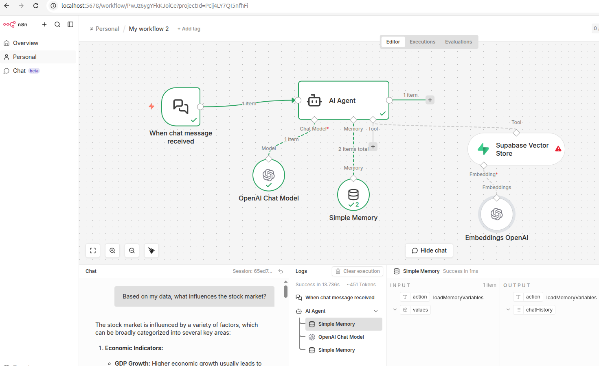
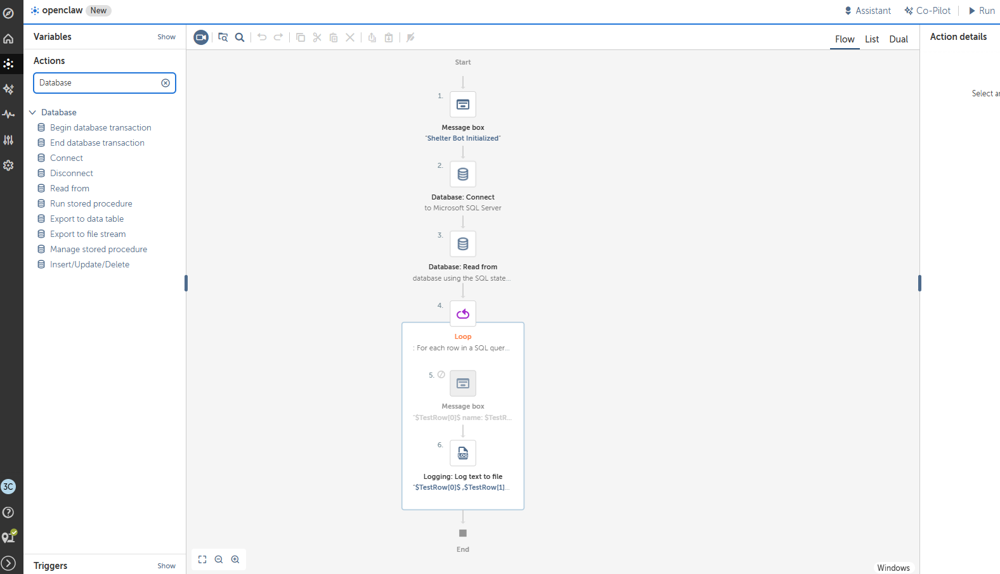

Calculus: ε-δ Proofs
Rigorous mathematical proofs using formal definitions
Limit of 1/x³ at x=2
Rigorous proof using the formal definition of a limit. We analyze the behavior as x approaches the constant a.
General Limit of 1/x
Exploration of the ε-δ relationship for rational functions.
View Detailed SolutionRational Function Proof
Application of the triangle inequality and bounding techniques for denominators near a point.
Discussion ThreadThe Unit Case
A simplified case study highlighting the fundamental mechanics of the limit definition.
Step-by-Step BreakdownWorkflows & Automation
Technical projects and automated systems
AI Automation
n8n + Supabase AI RAG Workflow
Key steps demonstrated:
- Local Supabase and n8n setup
- Document ingestion pipeline with OpenAI text embeddings
- Storing content and vectors in Supabase
- Building a chat workflow using AI Agent with memory and vector retrieval

Workflow diagram will appear hereFigure 1: RAG workflow connecting document ingestion, vector storage, and chat retrieval.
Robotic Process Automation
Automation Anywhere Bot
Developing scalable solutions using the Automation Anywhere Community Edition . This workflow demonstrates process logic for data handling.

Workflow diagram will appear hereFigure 2: Visual representation of the logic flow and bot structure.
WooCommerce Workflows
WooCommerce Transaction Workflow (Stripe Integration)
Develop and test a complete e-commerce transaction flow, including payment processing, refund handling, and promotional logic. This workflow ensures accurate synchronization between WooCommerce, Stripe Sandbox, and backend database systems.
Analytics Dashboard
Apple Stock (AAPL) - Bollinger Bands
Interactive D3.js chart using Bollinger Bands algorithm. Brush/select a region to zoom in. Double click to reset.
Other Projects
Automated Data Pipeline
End-to-end data processing workflow with validation, transformation, and storage.
CI/CD Automation Pipeline
Automated testing, building, and deployment with rollback capabilities using industry standard tooling.